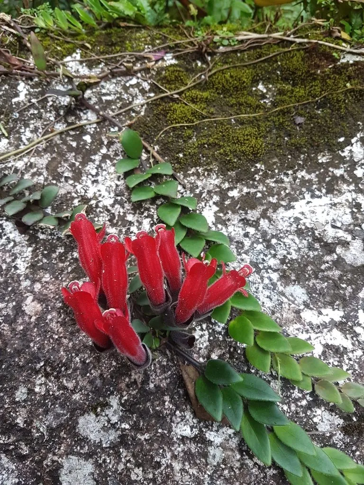

花卉与草本 · 植物界
口红花 Aeschynanthus pulcher

苦苣苔科芒毛苣苔属附生藤本，花冠筒状鲜红、从黑色花萼中伸出，形似一支旋出的口红，是奇趣的室内垂吊花卉。
- 分类
- 门被子植物门纲木兰纲目唇形目科苦苣苔科属芒毛苣苔属
- 栖息环境
- 热带雨林树干与岩石附生，喜温暖湿润半阴
- 地理分布
- 原产印度尼西亚、马来西亚等地；中国南方栽培
- 保护级别
- 暂无评估；栽培观赏植物，不涉及保护等级
物种志
口红花为苦苣苔科芒毛苣苔属附生藤本，茎肉质、攀援或下垂，长可达一米。叶片对生，肉质，椭圆形至披针形，表面深绿有光泽。花数朵簇生于枝顶或叶腋，花萼筒状、黑紫色并被绒毛，花冠筒状、鲜红色，先端五裂，从花萼中伸出，形似旋出的口红，花期六月至十月；蒴果细长，成熟时开裂，种子具毛，果期秋冬季。
口红花原产印度尼西亚、马来西亚等东南亚热带地区，常附生于雨林树干和岩石上，中国南方有栽培。它喜温暖湿润和半阴环境，忌强光直射，适宜疏松透气、排水良好的附生基质，不耐寒。花形奇特、色彩鲜艳，是室内垂吊和阳台绿化的优良植物；也可作吊篮栽培。养护中需保持较高空气湿度，避免盆土长期积水。
形态与习性
- 株高附生藤本，茎长可达 1 m
- 花期6–10 月，花冠鲜红
- 果期秋冬季，蒴果细长
- 光照喜半阴散射光
- 水分喜高湿，忌积水
- 土壤疏松透气的附生基质
- 主要用途室内垂吊、吊篮观赏
趣味知识
- 口红花的黑色花萼像口红管，鲜红花冠从萼中伸出，形似旋出的口红。
- 它属于苦苣苔科，这一科植物多以附生和耐阴著称。
- 口红花在空气湿度高的环境下叶片油亮，干燥时叶缘易焦枯。